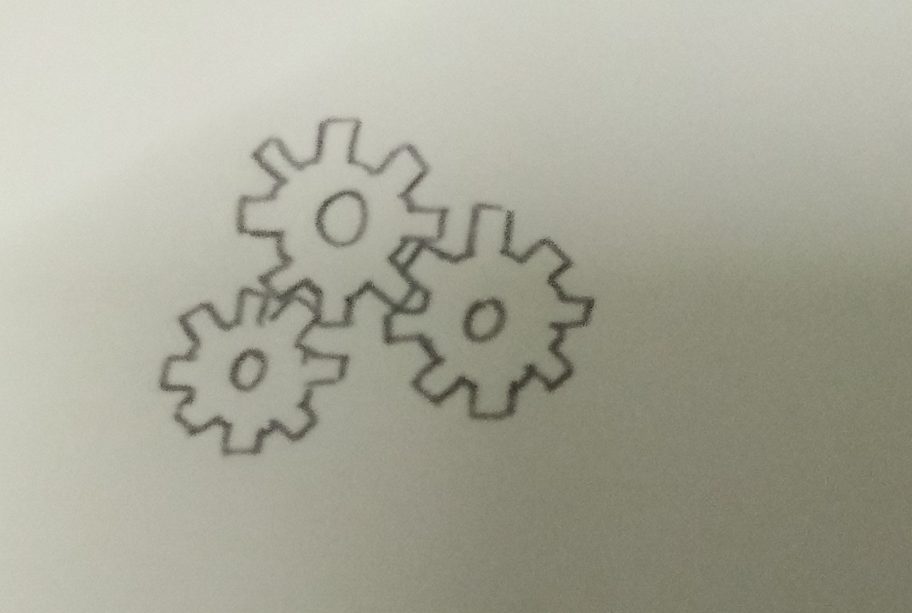
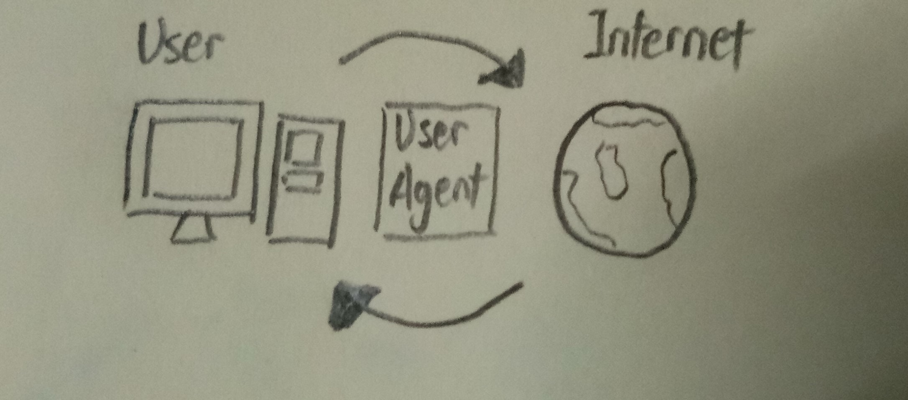

- Introduce automated testing of HTML / CSS
-

Automated testing of HTML and CSS is different with manual, as automated testing will using an automation tool to execute the testing process for HTML and CSS. Automation tool will have a better help, as we can compare both the actual result and expect result. Besides that, manual testing will require time and money to do. However, for automation testing it can be run overnight, and also can be used in multi-language web site.
- Explain user-agent
-

User-agent is a software that is acting on behalf of a user. For example, when we are browsing internet, the browser will act as agent, and turns all our actions into commands and communicate with the internet.